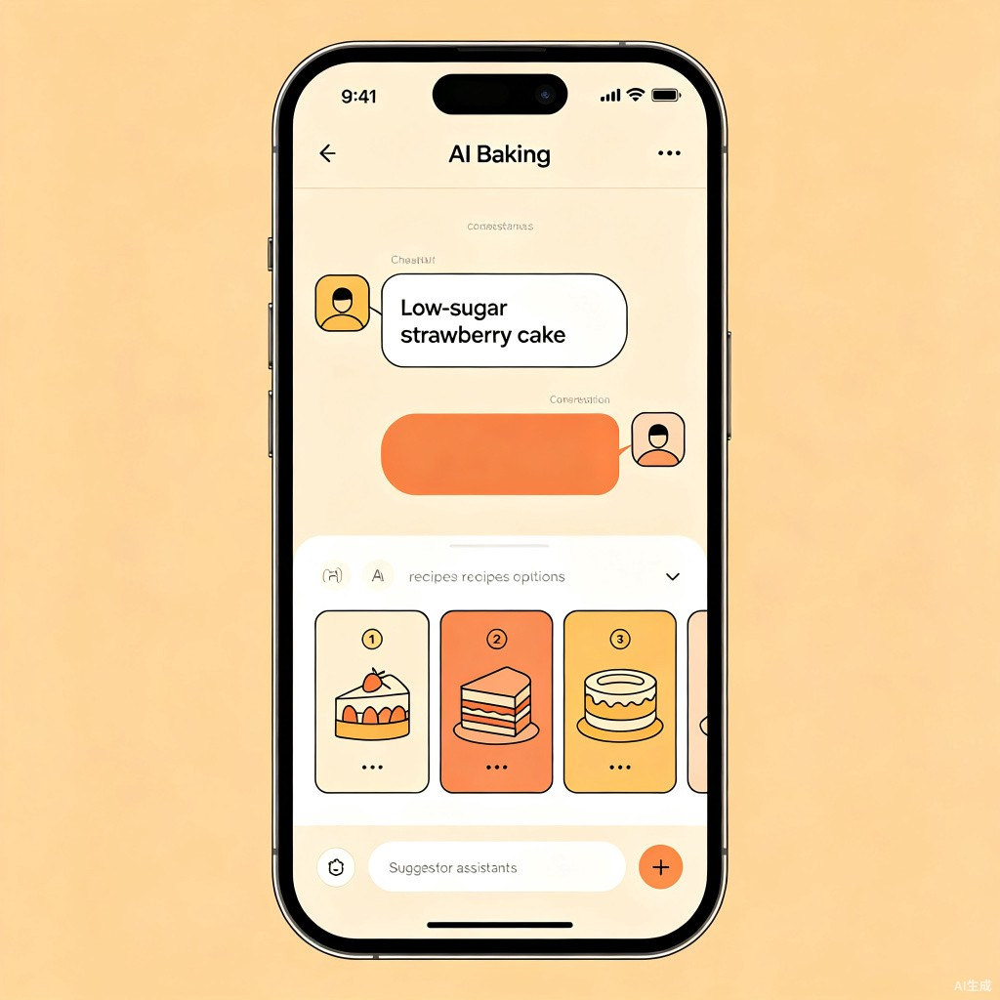
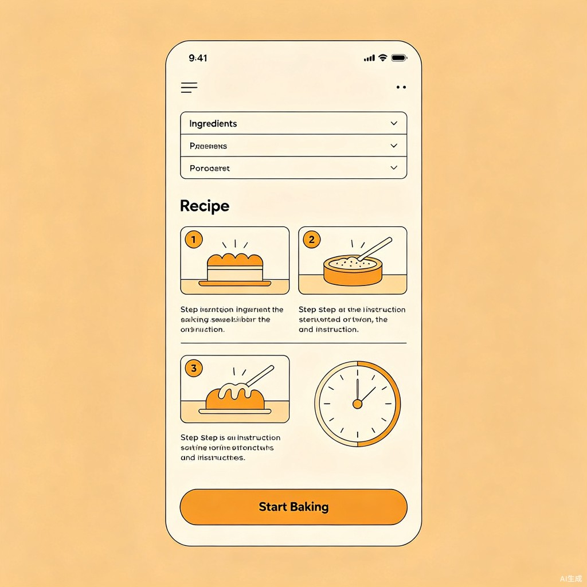
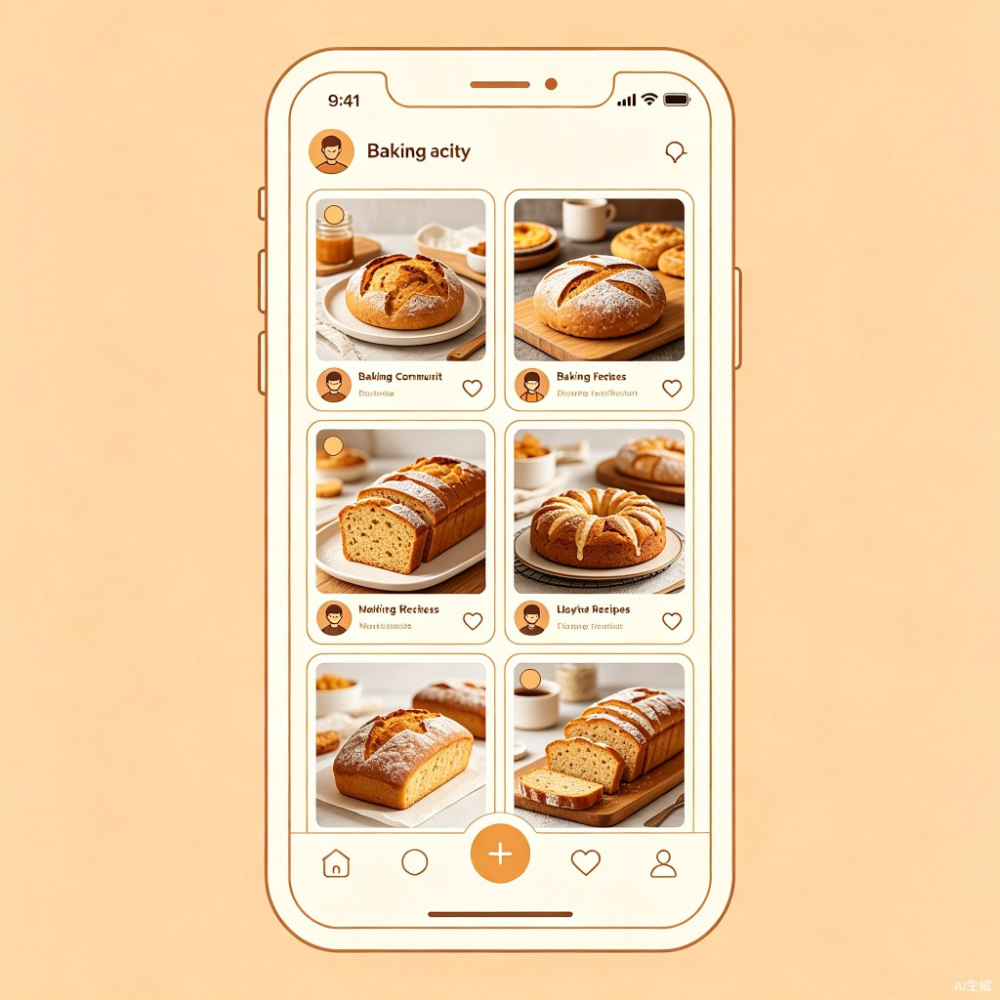

让每个人都能成为烘焙达人 — AI 驱动的智能烘焙助手
中国烘焙食品零售市场 2025 年规模达到 6621.5 亿元，年均复合增长率 8.69%，预计 2029 年将突破 8595.6 亿元。消费升级趋势明显——消费者从"能吃饱"转向追求健康化（低糖、低脂、清洁标签）和场景化消费[1]。
烘焙对非专业人群的认知门槛极高，核心痛点集中在四个维度：
当前主流食谱平台（下厨房 1.28 亿 MAU、豆果美食 8900 万 MAU）以综合菜谱为主，烘焙仅是其子类目，缺乏垂直深耕。全球 AI 食谱市场正以 20.9% 年复合增长率扩张，但中国尚无专注烘焙垂直领域的 AI 驱动型应用[2]。
烘焙是一个高度依赖精确参数（温度、比例、时间）的领域，天然适合 AI 驱动的个性化适配。当前市场缺少一个既能提供专业配方知识、又能根据用户实际条件智能调整的垂直工具。
烘焙AI宝典 是一款 AI 驱动的垂直烘焙助手，同时兼顾专业配方百科和AI 智能定制双引擎，覆盖从零基础到进阶水平的全部烘焙爱好者。以微信小程序为 MVP 形态，后续扩展至 APP 和 PC 端。
| 维度 | MVP 目标（上线 3 个月） | 成长目标（上线 12 个月） |
|---|---|---|
| 用户规模 | 注册用户 10,000+ | 注册用户 100,000+ |
| 用户留存 | 次周留存率 ≥ 30% | 月留存率 ≥ 25% |
| AI 使用 | AI 配方生成功能使用率 ≥ 40% | AI 功能日均调用 ≥ 5,000 次 |
| 付费转化 | [To be confirmed] | 付费会员转化率 ≥ 5% |
| 内容建设 | 精选配方 ≥ 500 个 | 配方库 ≥ 3,000 + UGC 内容 |
MVP 阶段聚焦最小可行路径：配方百科浏览 + AI 智能配方生成 + 基础跟做引导 + 用户收藏分享。社区、电商、课程等模块在 Phase 2/3 引入。
想给家人做蛋糕但完全没经验，看到复杂配方就放弃。需要手把手引导和简化流程。
核心诉求：告诉我买什么、怎么做、为什么这么做
周末有时间尝试新配方，但经常失败——蛋糕塌陷、面包发硬。希望根据自己设备调整配方。
核心诉求：理解失败原因，适配我的烤箱和环境
有经验但想突破常规，喜欢创造独特配方。愿意付费获取专业技巧和独家配方灵感。
核心诉求：AI 帮我生成创新配方，给我专业反馈
| # | 场景 | 用户目标 | 关键路径 | 优先级 |
|---|---|---|---|---|
| S1 | 新手首次烘焙 | 从零完成一个简单烘焙产品 | 浏览推荐 → 选择入门配方 → 查看材料清单 → 跟做步骤（含计时器） | P0 |
| S2 | AI 定制配方 | 根据现有食材和偏好生成专属配方 | 描述需求 → AI 生成候选配方 → 选择并微调 → 查看完整方案 | P0 |
| S3 | 失败诊断求助 | 了解烘焙失败原因并获得改进方案 | 上传成品照片 → 描述问题 → AI 诊断原因 → 给出调整建议 | P1 |
| S4 | 食材替代处理 | 缺少某种材料时找到替代方案 | 查看配方材料表 → 标记缺失材料 → AI 推荐替代品及影响说明 | P1 |
| S5 | 配方版本管理 | 保存和对比不同版本的调整配方 | AI 生成优化建议 → 确认修改 → 保存为新版本 → 历史版本对比 | P2 |
| 维度 | 下厨房 | 豆果美食 | 烘焙AI宝典（本项目） |
|---|---|---|---|
| 定位 | 综合菜谱社区 | 美食社区 + 健康管理 | 烘焙垂直 AI 助手 |
| MAU | ~1.28 亿 | ~8900 万 | —（新进入） |
| AI 能力 | 食材反向查菜谱 | AI 营养师（三餐计划） | AI 配方定制 + 诊断 + 设备适配 |
| 烘焙深度 | 烘焙仅为子类目，内容浅 | 烘焙内容有限 | 烘焙全品类深耕，专业参数体系 |
| 设备适配 | 无 | 无 | 烤箱型号识别 + 环境补偿 |
| 失败诊断 | 依赖社区问答 | 依赖社区问答 | AI 拍照诊断 + 原因分析 |
| 商业模式 | 电商 + 知识付费 + 广告 | 商城 + 课程 + AI 增值服务 | 会员订阅 + 电商 + 知识付费 |
graph TD
A[烘焙AI宝典] --> B[烘焙百科配方库]
A --> C[AI 智能配方定制引擎]
A --> D[智能烘焙助手]
A --> E[烘焙社区]
A --> F[个人中心]
A --> G[食材工具商城]
B --> B1[分类浏览]
B --> B2[配方详情页]
B --> B3[搜索与筛选]
B --> B4[收藏与食谱本]
C --> C1[需求对话生成]
C --> C2[食材替换引擎]
C --> C3[份量缩放]
C --> C4[设备适配]
C --> C5[环境感知]
D --> D1[分步实时引导]
D --> D2[计时器]
D --> D3[失败诊断]
D --> D4[保存建议]
E --> E1[作品展示墙]
E --> E2[烘焙挑战赛]
E --> E3[达人体系]
F --> F1[我的配方本]
F --> F2[设备档案]
F --> F3[偏好设置]
| # | 模块 | 功能 | 描述 | 优先级 | 阶段 |
|---|---|---|---|---|---|
| F01 | 首页 | 推荐信息流 | 根据用户偏好和热门趋势推荐配方，包含难度标签和品类分类 | P0 | Phase 1 |
| F02 | 配方浏览 | 分类浏览 | 按品类（蛋糕/面包/饼干/甜品/塔派/中式糕点）、难度、场景分类浏览 | P0 | Phase 1 |
| F03 | 配方浏览 | 搜索筛选 | 关键词搜索 + 食材反向搜索 + 标签组合筛选 | P0 | Phase 1 |
| F04 | 配方详情 | 详情页 | 食材清单（含分量）、步骤图文、预计时长、难度、营养信息、过敏原标注 | P0 | Phase 1 |
| F05 | 配方详情 | 份量缩放 | 选择份数（如 2 人/4 人/8 人），食材用量自动换算 | P0 | Phase 1 |
| F06 | AI 助手 | 对话式配方生成 | 用户描述想法，AI 生成 2-3 个候选定制配方，支持多轮调整 | P0 | Phase 1 |
| F07 | AI 助手 | 食材替换 | 检测缺失食材，推荐替代品并说明口感/质地变化 | P1 | Phase 2 |
| F08 | AI 助手 | 设备适配 | 录入烤箱型号，AI 自动补偿温度偏差，给出调整建议 | P1 | Phase 2 |
| F09 | AI 助手 | 环境感知 | 根据地区湿度、海拔、季节自动微调配方参数 | P1 | Phase 2 |
| F10 | AI 助手 | 配方诊断 | 上传已有配方，AI 分析比例合理性并优化 | P1 | Phase 2 |
| F11 | 跟做引导 | 分步引导 | 按步骤逐步提示操作，每步含图文说明和注意事项 | P0 | Phase 1 |
| F12 | 跟做引导 | 智能计时器 | 关键步骤自动启动倒计时（搅拌/烘烤/冷却），超时提醒 | P0 | Phase 1 |
| F13 | 跟做引导 | 失败诊断 | 上传成品照片，AI 识别问题（塌陷/开裂/过硬）并分析原因 | P1 | Phase 2 |
| F14 | 个人中心 | 收藏管理 | 收藏配方、自定义食谱本分类、一键分享 | P0 | Phase 1 |
| F15 | 个人中心 | 设备档案 | 录入烤箱/工具型号，系统自动适配 | P1 | Phase 2 |
| F16 | 个人中心 | 偏好设置 | 口味偏好、饮食限制（过敏原）、健康目标 | P0 | Phase 1 |
| F17 | 社区 | 作品展示墙 | 用户上传成品照片 + 评分 + 笔记 | P1 | Phase 2 |
| F18 | 社区 | 烘焙挑战赛 | 定期主题挑战，增加活跃度和内容产出 | P2 | Phase 3 |
| F19 | 商城 | 食材导购 | 配方页一键生成购物清单，跳转电商购买 | P2 | Phase 3 |
| F20 | 商城 | 食材包销售 | 精确预称量食材包 + 专属配方 | P2 | Phase 3 |
首页顶部为搜索栏，下方依次为横向滚动的品类入口（蛋糕、面包、饼干、甜品、塔派、中式糕点），接下来是"今日推荐"卡片列表和"热门配方"瀑布流。底部导航栏包含"首页""AI 助手""社区""我的"四个入口。
对话式界面，顶部为会话区域，底部为输入框和快捷按钮。用户输入需求后，AI 以卡片形式展示 2-3 个候选配方，每个卡片包含成品效果图、配方名称、食材清单摘要、预计时长、难度。用户点击卡片可展开查看完整详情，也可在对话中继续调整。


配方详情页顶部为成品大图 + 基础信息栏（名称、难度、时长、评分、份量选择器），中部为可展开的食材清单（含份量缩放），下部为分步骤教程区（图文卡片式）。底部固定操作栏："开始跟做"按钮和"收藏""分享"图标。

flowchart LR
U[用户输入] --> NLU[意图理解 & 参数提取]
NLU --> RAG[配方知识库检索]
RLU[LLM 配方生成/调整] <-- RAG
RLU --> V[结果验证 & 安全审查]
V --> O[输出结构化配方]
style U fill:#FEE2E2
style O fill:#DCFCE7
style RAG fill:#FEF3C7
采用"检索增强生成"策略：先从专业配方知识库检索相似配方作为基础，再由 LLM 根据用户约束条件（口味、设备、食材限制等）进行调整优化。这种混合策略既保证配方的可靠性（避免纯 LLM 生成的"幻觉"），又兼顾定制灵活性。
内置食材特性知识图谱，覆盖 200+ 种烘焙常用食材的功能属性。替换时输出三要素：推荐的替代品、预计对口感/质地/外观的影响、配方中其他参数是否需要联动调整。
维护烤箱型号数据库，收录各型号的已知温差特性。用户录入设备型号后，系统自动补偿温度偏差。未录入型号的设备，提供标准校准流程指导。
| 质量维度 | 评估方法 | 目标标准 |
|---|---|---|
| 配方可行性 | 人工评审 + 用户反馈 | 可执行率 ≥ 90% |
| 食材用量准确 | 标准样例回归测试 | 比例误差 ≤ 5% |
| 步骤完整性 | 结构化校验 | 必含步骤覆盖率 100% |
| 安全合规 | 敏感词过滤 + 过敏原检查 | 安全事故率 0 |
| 响应满意度 | 用户反馈（ thumbs up/down ） | 好评率 ≥ 80% |
| 指标类别 | 指标名称 | 定义 | 观测目的 |
|---|---|---|---|
| 增长 | DAU / MAU | 日/月活跃用户数 | 衡量产品整体活跃度 |
| 增长 | 新用户注册率 | 新用户占访问用户比例 | 衡量获客效率 |
| 留存 | 次日 / 7日 / 30日留存 | 注册后 N 日回访比例 | 衡量产品粘性 |
| 功能 | AI 生成使用率 | 使用 AI 功能的用户 / DAU | 衡量核心差异化功能渗透 |
| 功能 | 跟做完成率 | 完成跟做全流程 / 进入跟做模式 | 衡量跟做体验是否顺畅 |
| 质量 | AI 好评率 | thumbs up / (up + down) | 衡量 AI 输出质量 |
| 质量 | 配方收藏率 | 被收藏次数 / 配方浏览次数 | 衡量配方内容质量 |
| 商业 | 会员转化率 | 付费会员 / 总注册用户 | 衡量商业化效率 |
| 事件名 | 触发时机 | 关键属性 |
|---|---|---|
| page_view | 进入任意页面 | page_name, source, referrer |
| recipe_view | 查看配方详情 | recipe_id, category, difficulty, source(ai/manual) |
| ai_generate_request | 用户发起 AI 生成 | input_text, intent_category |
| ai_generate_result | AI 返回结果 | result_count, latency_ms, is_fallback |
| ai_feedback | 用户反馈 AI 结果 | recipe_id, feedback(up/down), reason |
| bake_start | 用户开始跟做 | recipe_id, serving_count |
| bake_complete | 用户完成跟做 | recipe_id, duration, steps_completed |
| recipe_save | 收藏配方 | recipe_id, collection_name |
| member_subscribe | 购买会员 | plan_type, price, payment_method |
免费版：基础浏览 + 每日 3 次 AI 生成
高级会员 19.9 元/月：无限 AI + 设备适配 + 环境感知
专业会员 49.9 元/月：全部权益 + 商用配方授权
配方页"一键购买食材"跳转电商 CPS 佣金
自有品牌食材包销售（毛利率 40-60%）
工具设备推荐返佣
系统烘焙课程 29-99 元/课
知名烘焙师直播课 19-49 元/场
付费独家配方 5-20 元/个
| 权益 | 免费版 | 高级会员 | 专业会员 |
|---|---|---|---|
| 配方库浏览 | 全部 | 全部 | 全部 |
| AI 配方生成 | 每日 3 次 | 无限 | 无限 |
| 食材替换引擎 | — | 全部 | 全部 |
| 设备温度适配 | — | 全部 | 全部 |
| 环境感知调整 | — | 全部 | 全部 |
| 失败诊断（拍照） | — | 每月 10 次 | 无限 |
| 配方诊断与优化 | — | 每月 5 次 | 无限 |
| 商用配方授权 | — | — | 全部 |
| 烘焙课程 | 免费课程 | 全部 | 全部 + 直播回放 |
gantt
title 产品迭代路线图
dateFormat YYYY-MM-DD
axisFormat %m月
section Phase 1 MVP
首页 + 分类浏览 + 搜索 :a1, 2026-07-01, 21d
配方详情 + 份量缩放 :a2, after a1, 14d
AI 对话式配方生成 :a3, after a1, 28d
跟做引导 + 计时器 :a4, after a2, 14d
个人中心 + 收藏 :a5, after a4, 10d
MVP 上线内测 :milestone, after a5, 0d
section Phase 2 差异化
食材替换引擎 :b1, after a5, 21d
设备适配 + 环境感知 :b2, after a5, 28d
失败诊断（拍照） :b3, after b1, 21d
配方诊断与优化 :b4, after b2, 14d
社区作品展示墙 :b5, after b3, 21d
Phase 2 发布 :milestone, after b5, 0d
section Phase 3 商业化
会员体系 :c1, after b5, 21d
电商导购 + 食材包 :c2, after c1, 28d
烘焙课程模块 :c3, after c1, 21d
运营活动体系 :c4, after c2, 21d
Phase 3 发布 :milestone, after c4, 0d
| 风险 | 概率 | 影响 | 应对策略 |
|---|---|---|---|
| AI 配方"幻觉"：生成不可执行的配方导致用户失败 | 高 | 高 | RAG 混合策略（检索优先 + LLM 微调）；人工抽检 + 用户反馈闭环；所有 AI 生成内容标注免责 |
| 冷启动内容不足：配方库量少无法支撑推荐 | 中 | 中 | Phase 1 人工精选 500 个高质量配方；AI 生成功能降低对预置内容的依赖 |
| AI 调用成本高：用户量增长后 API 费用压力大 | 中 | 中 | 免费额度限制；缓存高频相似需求；探索模型蒸馏/小模型部署 |
| 用户留存低：烘焙频次天然低于日常烹饪 | 中 | 高 | 社区内容提高日活；推送烘焙灵感（节日/节气推荐）；挑战赛制造参与动力 |
| 综合平台入局：下厨房/豆果推出类似 AI 功能 | 低 | 高 | 深耕烘焙垂直壁垒（设备适配、环境感知、失败诊断难以快速复制）；建立社区和达人生态 |
| 过敏原安全问题：AI 推荐含用户过敏原的食材 | 低 | 极高 | 用户过敏原强制设置；AI 输出过敏原检查规则；敏感词过滤 |